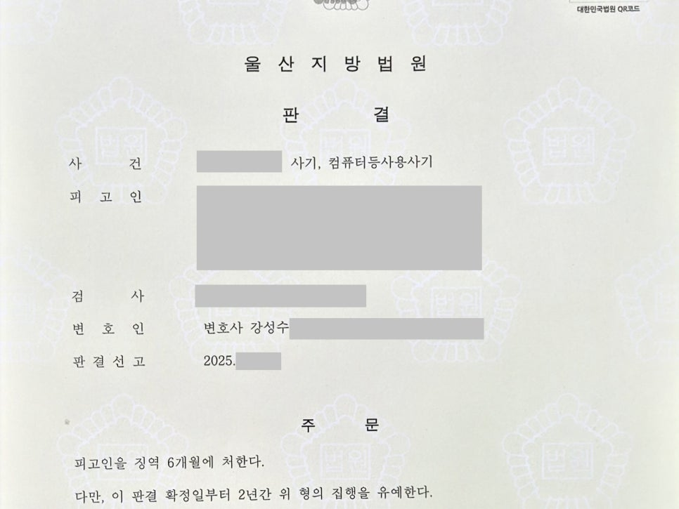

핵심 결과
집행유예 기간 중 다시 사기 범행을 저질렀다면 실형 가능성이 매우 큽니다.
법원은 “이미 선처를 받았는데도 다시 범행했다”고 볼 수 있습니다.
이번 사건은 사기와 컴퓨터등사용사기 혐의가 함께 적용되었습니다.
범행 횟수도 20회가 넘었습니다.
하지만 법무법인 우린은 경합범 법리와 피해 회복 자료를 정리해 실형 위험을 낮췄습니다.
최종 결과는 징역 6월, 집행유예 2년이었습니다.
| 구분 | 내용 |
|---|---|
| 사건 분야 | 사기, 컴퓨터등사용사기 |
| 불리한 조건 | 집행유예 기간 중 범행 |
| 범행 횟수 | 20회 이상 |
| 핵심 쟁점 | 실형 여부, 경합범 관계, 피해 회복 |
| 주요 대응 | 경합범 법리 주장, 전략적 피해 회복, 합의 자료 제출 |
| 최종 결과 | 징역 6월, 집행유예 2년 |
사건 개요
의뢰인은 대출을 대신 받아주겠다는 식으로 피해자들을 속인 혐의를 받았습니다.
또 타인의 개인정보를 이용해 무단 결제까지 진행한 것으로 조사되었습니다.
검찰은 이를 사기죄와 컴퓨터등사용사기죄로 기소했습니다.
범행 횟수는 20회가 넘었습니다.
문제는 여기서 끝나지 않았습니다.
의뢰인은 이미 집행유예 기간 중이었습니다.
집행유예 중 다시 범행을 저지른 사건은 법원이 매우 엄격하게 봅니다.
실형 위험이 컸던 이유
- 집행유예 기간 중 다시 범행했습니다.
- 동종 전과가 여러 차례 있었습니다.
- 사기와 컴퓨터등사용사기가 함께 문제 되었습니다.
- 범행 횟수가 20회 이상이었습니다.
- 피해자가 여러 명이었습니다.
이런 사건은 단순한 반성문만으로 집행유예를 기대하기 어렵습니다.
해결 전략
1. 경합범 법리를 먼저 검토했습니다
이 사건의 핵심은 단순히 “한 번만 더 선처해 달라”는 주장이 아니었습니다.
기존 판결과 이번 범행 사이에 경합범 관계가 성립할 수 있는지를 검토했습니다.
경합범 관계가 인정되면 형량 판단 구조가 달라질 수 있습니다.
실형 가능성을 낮출 수 있는 중요한 법리적 쟁점이었습니다.
2. 피해 회복은 선택과 집중으로 진행했습니다
피해자가 많다고 해서 무작정 모든 피해자에게 같은 방식으로 접근할 수는 없습니다.
의뢰인의 경제적 상황을 고려해 실질적으로 양형에 도움이 될 수 있는 피해 회복 방향을 잡았습니다.
가능한 피해자와 합의를 진행하고, 처벌불원 자료를 확보하는 데 집중했습니다.
3. 재범 방지 가능성을 자료로 설명했습니다
집행유예 중 범행 사건에서는 재범 방지 자료가 중요합니다.
다시 범행하지 않을 생활 환경, 가족의 관리 가능성, 경제 상황 정리, 반성 태도를 자료로 구성했습니다.
재판부가 사회 안에서 한 번 더 교정할 수 있다고 판단할 근거를 만들었습니다.
| 대응 항목 | 준비한 내용 |
|---|---|
| 법리 검토 | 기존 사건과 이번 사건의 경합범 관계 분석 |
| 피해 회복 | 일부 피해자와 실질적 합의 및 처벌불원 확보 |
| 양형자료 | 반성자료, 생활환경, 가족관계 자료 정리 |
| 재범 방지 | 경제 상황 정리와 향후 관리 계획 제출 |
| 변론 방향 | 실형보다 집행유예로도 교정 가능하다는 점 강조 |
결과
재판부는 범행 횟수와 집행유예 기간 중 범행이라는 점을 무겁게 보았습니다.
하지만 경합범 관계의 법리적 특수성과 피해 회복 노력을 함께 검토했습니다.
그 결과 실형이 아닌 집행유예가 선고되었습니다.
최종 결과
집행유예 기간 중 20회가 넘는 사기·컴퓨터등사용사기 혐의가 문제 되었지만 징역 6월, 집행유예 2년이 선고되었습니다.
의뢰인은 구속을 피하고 사회 안에서 다시 생활할 기회를 얻었습니다.
사기 사건에서 중요한 점
사기 사건은 죄를 인정한다고 해서 자동으로 가볍게 끝나지 않습니다.
특히 전과가 많거나 집행유예 기간 중이라면 실형 위험이 큽니다.
이때는 피해 회복만큼 법리 검토도 중요합니다.
기존 사건과의 관계, 범행 시점, 피해 회복 정도, 합의 여부, 재범 방지 계획을 함께 봐야 합니다.
단 한 줄의 법리 주장과 한 장의 합의 자료가 결과를 바꿀 수 있습니다.
결론
집행유예 중 사기 사건은 매우 불리합니다.
하지만 모든 사건이 곧바로 실형으로 끝나는 것은 아닙니다.
경합범 법리, 피해 회복, 양형자료, 재범 방지 계획을 제대로 정리하면 집행유예 가능성을 검토할 수 있습니다.
사무장·상담실장 없이 변호사가 직접 상담합니다
사기와 컴퓨터등사용사기 사건은 초기 기록 검토가 중요합니다.
법무법인 우린은 강성수 변호사가 직접 상담하고, 법리 검토부터 피해자 합의, 재판 변론까지 직접 진행합니다.
집행유예 중 범행이나 전과 때문에 실형이 걱정된다면 먼저 사건 기록을 정확히 확인해야 합니다.
이 글은 일반적인 법률 정보 제공을 위한 자료이며, 개별 사건의 결과를 보장하지 않습니다. 구체적인 대응은 사실관계와 증거에 따라 달라질 수 있습니다.